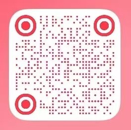

About Me
Personal statement
It had been half a year since I arrived in New York.
New York spring is a long season of rain. In damp shoes, slightly out of breath, I climbed up to the third floor of Paulson. This is one of NYU’s most iconic academic buildings. NYU is one of the most talked-about schools in New York. And New York—well, New York is one of the most famous cities in the world.
And I am just an ordinary person.
Before I came, I carried both excitement and fear. New York had appeared again and again in films and TV. Online, I saw her glossy brightness—and her decay. I didn’t believe any of it. I wanted to see for myself.
In August 2024, stepping out of JFK, I watched the street scenes slide backward through the car window. Back then, I couldn’t tell Brooklyn from Manhattan. I only remember the moment the car crossed a bridge—how, all at once, skyscrapers lit up at dusk flooded my vision like a tide. My heart trembled as if to confirm it for me:
I was really here.
My first year was about learning to live inside the unfamiliar: a new environment, a different culture, and a cost of living far beyond what I expected. Some feelings came too fast for me to place; some difficulties were too heavy to speak out loud. I wasn’t used to the long darkness after daylight saving time, the wind that cut across my face, or the crowded, chaotic subway. On deep winter nights, I comforted myself in the simplest way: standing under a hot shower, letting tears dissolve into steam.
In New York, running into walls becomes almost routine. But if I have one advantage, it’s this: I stay optimistic—and I don’t break easily. After a year, I began to find my direction. By trying again and again, and stepping closer to the interests that once lived only in imagination, I finally recognized what I truly love: searching for ways to express and connect—somewhere between fashion, media, design, and communication.
Walking through New York’s busy streets, fabrics and gemstones behind bright display windows seem to speak to me. When an idea sparks, I’ll sit down wherever I am, open my laptop, and let my thoughts run freely. When I talk with friends about brand design or the new season’s silhouettes, the conversation quickly shifts from sharing to debating—sometimes even to critique—and can stretch on for an entire day. Slowly, I realized something: culture and art are humanity’s unique superpower. And New York is the kind of city that can hold the most extreme good and the most extreme bad, ambition and ordinariness alike—then still make space for each person to find their own place within it.
Walking through New York’s busy streets, fabrics and gemstones behind bright display windows seem to speak to me. When an idea sparks, I’ll sit down wherever I am, open my laptop, and let my thoughts run freely. When I talk with friends about brand design or the new season’s silhouettes, the conversation quickly shifts from sharing to debating—sometimes even to critique—and can stretch on for an entire day. Slowly, I realized something: culture and art are humanity’s unique superpower. And New York is the kind of city that can hold the most extreme good and the most extreme bad, ambition and ordinariness alike—then still make space for each person to find their own place within it.
Not long ago, I started playing Cyberpunk 2077, a work of art in its own right. Night City bears an uncanny resemblance to New York, and I felt an intense resonance with its protagonist, V. She chases the brief glory of becoming “somebody,” and pays for it with her life. Perhaps, in her final moment, she wonders if choosing an ordinary path would have changed the ending. But I believe that when she closes her eyes, what flashes before her is not regret—only a life vivid enough to have been worth living.
I feel the same.
I want the same.
By coincidence, the first letter of my name is also V. So I made that letter my mark.
My thoughts return to that ordinary afternoon. I walked into my writing class, and the professor handed out a few pages of reading: Joan Didion’s Goodbye to All That. Somewhere in the middle, one sentence struck me hard:
“It is often said that New York is a city for only the very rich and the very poor… it is also a city for the very young.”
I wrote it down on a sticky note, signed it with a V, and placed it on my window. Outside, it faces the skyline of Lower Manhattan— the same sea of lights I saw, when I first came to New York from JFK, crossing the Manhattan Bridge.
那是我到达纽约半年之后。
纽约的春天是漫长的雨季，我踩着湿漉漉的鞋子，气喘吁吁地爬上 Paulson 的三楼。这是 NYU 最著名的一栋教学楼，纽约大学是纽约最著名的学校，而纽约，是世界最著名的城市。
而我，是一个普通的人。
来之前，我对这个地方充斥着憧憬，也伴随着恐惧。纽约在无数电影和美剧里反复出现，我在互联网上看她的光鲜亮丽，也看她的腐败不堪。我都不信，我想自己来看看。
2024 年 8 月，我从 JFK 机场出来。坐在车上，我望着车窗外不断后退的街景。那时我还分不清哪里是布鲁克林，哪里是曼哈顿，只记得汽车驶过一座大桥的瞬间，华灯初上的高楼铺天盖地地涌入视野。
心脏的颤动在提醒我——我真的来了。
第一年的时间，我努力适应一切。陌生的环境，迥异的文化，以及远超预期的生活成本。有些情绪来得太快，我一时不知该如何安放；有些困难太大，只能暂时留在心里。我不习惯冬令时后漫长的黑夜，不习惯寒风像刀子一样刮在脸上，也不习惯拥挤而混乱的地铁。深冬的夜里，我用最简单的方式安慰自己：站在热气蒸腾的淋浴下，让眼泪随着水汽一同消散。
在纽约，碰壁几乎成了日常。但我最大的优点，是乐观，也是打不败。用了一年的时间，我逐渐找到了方向。不断尝试、不断靠近那些曾经只停留在想象中的兴趣，我终于确认了自己真正热爱的事物——在时尚、媒体、设计与交流之间，寻找表达与连接的方式。
行走在纽约的街头，橱窗里的布料与珠宝仿佛在与我对话；灵感来临时，我会随地坐下打开电脑，让思绪不受阻碍地流淌；与朋友谈论品牌设计与新一季时装时，话题往往从分享转为讨论，甚至是批判，一聊就是整天。我逐渐意识到，文化与艺术是人类独有的超能力。而纽约，正是一座能够容纳极致的好与坏、野心与平凡的城市，让每个人在这里找到属于自己的位置。 也是在这里，我找到了我的“超能力”。
不久前，我开始接触《赛博朋克 2077》这款优秀的游戏作品。Night City 与纽约有着惊人的相似，而主角 V 的经历让我产生了强烈的共鸣。她追逐成为“大人物”的瞬间荣光，也为此付出了生命的代价。也许在生命的最后一刻，她会思考如果选择做一个普通人，结局是否会不同。但我相信，当她闭上双眼时，闪过的只会是一个足够精彩的人生。
我亦如此。
巧合的是，我名字的首字母同样是 V。于是，我将这个字母作为自己的标志。
思绪回到那个普通的下午。我走进写作课的教室，教授发下几页阅读材料——Joan Didion 的 Goodbye to All That。阅读间，一句话狠狠的击中了我：“It is often said that New York is a city for only the very rich and the very poor… it is also a city for the very young.” 我将这句话写在便利贴上，署名为 V，贴在房间的窗户上。窗外，它正对着曼哈顿下城区的高楼大厦——那是我第一次从JFK回家经过曼哈顿大桥时，看到的那片灯海。

Résumé
Skills
- Strong public speaking, group collaboration, and leadership skills, supported by high organizational efficiency.
- Entrepreneurial mindset developed through hands-on project ownership, cross-functional collaboration, and independent problem-solving.
- Proven ability to lead and adapt in multicultural environments, efficiently handling challenges and providing quick, effective solutions on the go.
- Adaptable aesthetic sense that aligns with diverse styles and cultures, reflecting a strong grasp of fashion and design principles.
- Professional in CapCut and Canva, with solid proficiency in Adobe Photoshop and InDesign for both video and photo editing. Additionally, experienced in web design languages including HTML, CSS, SVG, and JavaScript. Please visit my social media account to see my video editing work.
- Well-versed in social media strategy and content creation across multiple platforms, with hands-on experience managing and growing diverse social media accounts. For more detail, please scroll down to social media.
- 具备出色的公众演讲、团队协作与领导能力，组织效率高。
- 在独立负责项目、跨团队协作与自主解决问题的过程中，培养了创业型思维。
- 能在多元文化环境中快速适应并承担领导角色，高效处理挑战，及时给出有效方案。
- 审美适应性强，能够贴合不同风格与文化，具备扎实的时尚与设计理解。
- 熟练使用 CapCut 与 Canva，掌握 Adobe Photoshop 和 InDesign，可用于视频与图片编辑；并具备 HTML、CSS、SVG、JavaScript 等网页语言基础。请访问我的社交媒体账号以查看我的视频剪辑作品。
- 熟悉多平台社交媒体策略与内容制作，具备账号运营与增长经验。更多细节请下滑查看社交媒体。
Work experience
Kimber Health Aug. 2025–Present
Marketing Coordinator
- Led the management of the Rednote social media account, creating impactful advertising content that significantly boosted engagement and visibility.
- Spearheaded the planning and on-campus promotion of marketing events for student insurance products, successfully increasing student enrollment and on-campus engagement through targeted campaigns.
Sise Digital Co., Ltd. Jan. 2024–Mar. 2024
Exhibition Design Advisor
- Contributed key creative ideas and design recommendations for the exhibition, influencing major aspects of the event's layout and visitor engagement.
- Actively collaborated in exhibition planning and execution, providing strategic input on layout, visitor flow, and educational materials to enhance overall impact.
Kimber Health 2025 年 8 月–至今
市场协调员（Marketing Coordinator）
- 负责小红书账号运营与内容制作，策划并产出广告内容，显著提升互动与曝光。
- 主导学生保险产品的线下活动策划与校园推广，通过精准传播提升学生参保与校园参与度。
四色数码有限公司2024 年 1 月–2024 年 3 月
展览设计顾问（Exhibition Design Advisor）
- 为展览提供关键创意与设计建议，影响活动空间布局与观众体验。
- 参与展览策划与落地执行，就动线、空间规划与教育材料提出策略建议，提升整体呈现与传播效果。
Education
New York University | 2024–2028
Bachelor of Science | Media, Culture, and Communication
Minor: Fashion Studies
纽约大学（New York University） | 2024–2028
理学学士 | 媒体、文化与传播（Media, Culture, and Communication）
辅修专业：时尚学习(Fashion Studies)
Language
Proficient in Mandarin and English with strong writing and communication skills. Conversational in Korean.
中文与英文写作、沟通能力熟练；韩语可进行日常交流。
Social media
Instagram
Account: viav.iasun
Rednote (小红书）
Account ID: 116725301
Open profile
